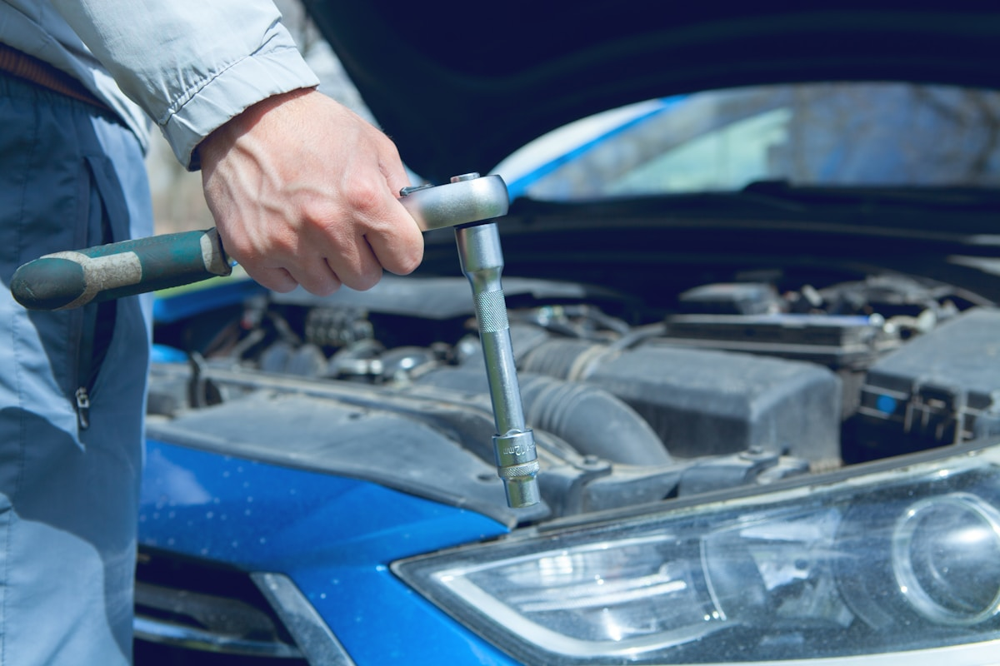

serrurier automobile mobile Lyon
Double de clé voiture Lyon — reprogrammation clé auto & urgences
Reprogrammation clé auto 69, doublon de télécommande ou perte de clés automobile : Mecanoo intervient en serrurier automobile mobile chez vous, avec un niveau tarifaire en général inférieur à la concession et des délais courts pour vos rendez-vous Lyon et métropole.
Pourquoi passer par Mecanoo pour vos clés à Lyon ?
- Prix tout compris généralement plus avantageux qu’en concession dans la même zone (selon équipements et véhicule).
- Rapidité : recherche créneaux et préparation projet pour limiter votre immobilisation.
- Déplacement Lyon, Villeurbanne, Bron, Vénissieux et le 69 — voyez aussi notre page zone d’intervention.

Marques souvent traitées sur demande
Selon votre année et équipements (transpondeur, télécommande, keyless…) — indiquez marque/modèle précis au contact.
La faisabilité dépend du véhicule et des pièces disponibles ; aucune liste n’est garantie exhaustive.
Une urgence après perte de clés automobile ou télécommande défaillante ?
Contactez-nous avec la marque, le modèle, l’année et vos besoins (doublon, reprogrammation, débloquage…) — nous revenons vers vous sous 24 h en général.
Formulaire ou devis